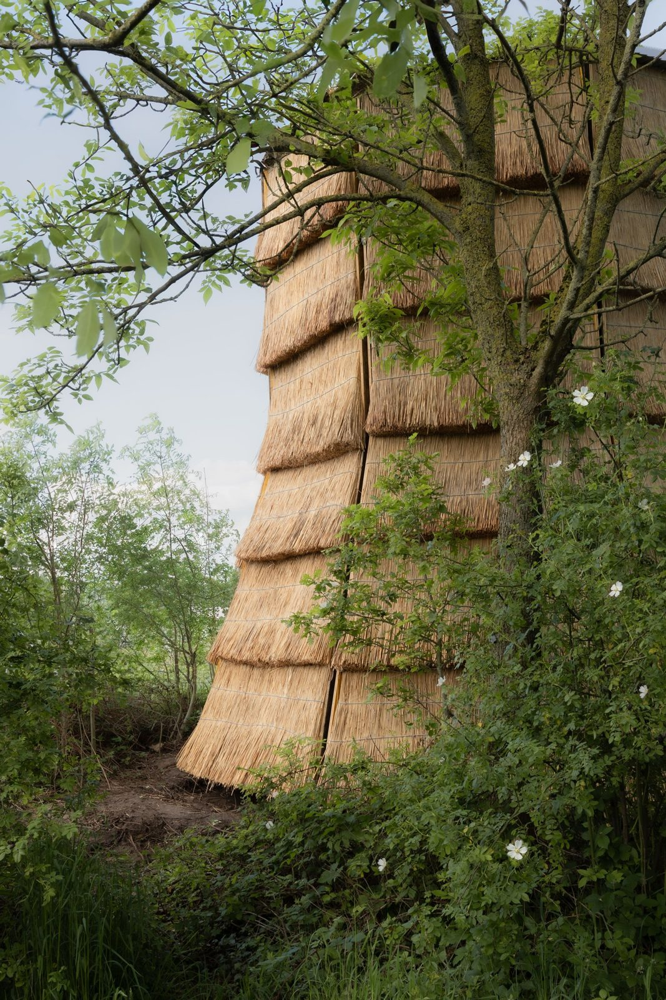
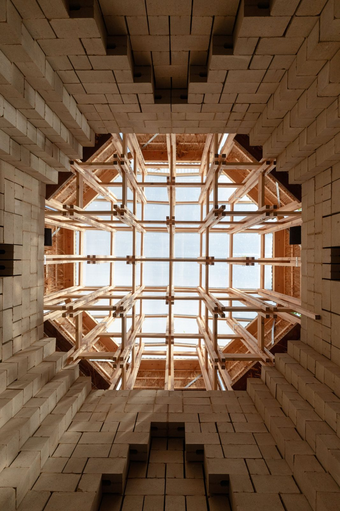

Collective Learning
- autor
- Theresa Zschäbitz
- datum
- 2024-12-19
This text is based on Theresa Zschäbitz’s presentation at Science Day 2024, “ALLIANCES,” organized by the Junior Professorship Act of Building at RWTH Aachen University. During the event, Zschäbitz joined Axel Sowa (moderator), James Binning (ASSEMBLE), and Angelika Hinterbrandner (kontextur) to discuss the topic “Collective Learning”:
In recent years, there has been a notable rise in practices structured as collectives and collaborations, especially in creative fields. These innovative frameworks have achieved remarkable success, reshaping architecture and its methodologies. However, one area where this shift has been slower is in educational institutions, particularly universities. Universities, bound by bureaucratic processes and long-standing traditions, often resist changing their inner structures and processes. How to adopt and integrate new, collaborative approaches into their educational systems? This Science Day discussion aimed to explore the transformative potential of collaborative structures and their role in shaping the future of education which is now visibly happening parallel across recognized Universities Europe-wide. The interexchange of Universities with each other can foster solving architectures urgent need for change of practice by collaboration in research and teaching alike and interlinked.
The HORST Anthill Pavilion in Asiat Park, Vilvoorde, Belgium, which Zschäbitz presented as a case study was created for the Horst Arts and Music festival. Designed to house Artist Afrah Shafiq’s video game installation ‘Where the Ants Go’ and the pavilion results from a collaboration between Afrah Shafiq, the RWTH Aachen University’s Junior Professorship “act of building” (aob), BC Materials, and architect Jeremy Waterfield. The pavilion which was considered as a test design for BC Materials compressed earth blocks, also offered the opportunity to try reed as a façade material. Built by 45 RWTH students over two weeks, it showcases innovative, sustainable building practices in combination. The pavilion embodies a forward-thinking approach to architecture, merging vernacular techniques with new and rediscovered materials to create an expressive design that reflects future possibilities for sustainable construction while teaching students and professionals the material specific craft techniques during its construction.
Aobs Pavilion construction project at HORST Festival was a broad collaboration with different institutions and people, the course content of our summer terms Master researchfield and elective and taught by my colleague Bregt Hoppenbrouwers o BC materials and me. When setting up the Horst workshop idea with the team of Horst we thought about how to integrate the students in the realization of this project and chose to rather focus on the construction execution planning, as the time wasn’t given to work out a design in collaboration with the artist whose digital artwork this project hosts. The design was done by Jeremy Waterfield, who worked out the projects design and with whom we brainstormed about the construction technique together. We then took over the role of a general contractor with aob to execute the design, subdivided the project in work packages: the masonry, the prefabricated thatch elements, the wooden roof which our students of the researchfield course had to research: vernacular examples, the construction technique, tasks and tools. The students planned the structure from element to assembly, some meetings with professionals helped a lot to enable the students to guide 8 teams of elective students through two weeks of construction.
To change the way future architects construct we need to expand material and building construction knowledge that goes beyond catalogued readymade products.
… on material level ….on processing and construction level … on craftsmanship … on design and planning level
We need to get to know those new materials, that often don’t come in standard formats: material characteristics means feeling its weight, how many people or tools you need to carry it from A to B, the surface haptic, how it behaves when it touches the water and if it crumbles in your hands. As well as on a its durability, to see how it changes with weather, the method of assembling, what happens to the earth mortar when it gets mixed too dry or to wet and how does this affect my constructions result? These things cannot be understood simply by reading and hearing theoretically in technical datasheets, one needs to get involved with it – we need to build and prototype with our own hands.
We have to learn about materials on their processing and production context: Where does it come from? How did it grow, get excavated or formed, what was this element before it was an element and how did it get here to the construction site? To be able to intervene with existing material flows, waste streams, we need to know how they work. Our master studio students are asked to make their own geo-based material from waste streams they find in Quarrys, from excavation waste and in urban recycling centers or biobased so called “waste” of Agricultural processes. To be able to create an earth mixture for compressed earth blocks from this excarvation waste is not only a very poetic storytelling but fascinating that it actually works and could work for other building materials too. It enables the students to understand their works broader impact and that they have an influence on the process of what is the matter they design with and don’t have to stay limited by existing catalogues of established elements. We need to learn about our industrial and natural environment and build up the awareness of having an alternative choice to what’s on the market. We have to learn about the impact of our choice of actions.
When switching to less processed, local and natural construction materials we need to learn from professionals and craftmen how to handle the material. At Horst we learned to mason from Professionals who taught us how to mason without speaking a common language, lots of unwritten knowledge sits in their gestures, the preparation of the masonry guidelines and the installation of the construction site. From a professional thatcher we learned how to arrange the Reet according to its length, designing the facade pattern on-site depending on the size of what resource we received here. He taught us to how to attach the Reet to the wooden substructure, how to handle the tools, and what small details to take care of, which led to many in situ detail solutions that would simply would not have been possible to plan without his input. What was the most amazing to see was how quickly our students picked it up and introduced the techniques to each other. Craftsmen knowledge that’s necessary to find smart solutions you simply can’t learn in school when not trying out welding, sawing, ramming, masoning, flexing, screwing, transporting, setting up scaffolding, mixing mortar – assembling – yourself at least once to get a basic understanding of crafts and tools.
On construction planning level: If we start to think building like borrowing material from a natural cycle, we will automatically construct for disassembly, we have to think what happens to the elements and material in its afterlife, which leads us to screwing, stacking & stapling instead of glueing, welding, energy-intensive transformation and assembly. To create an awareness about the constructive role the element plays, we can choose wisely which material can do what best: in the Horst projects the compressed earth blocks carry the vertical load while Reet protects it from the rain, like this, we can use earth blocks as the loadbearing structure with only a base layer of stabilised blocks. Reused polycarbonate lets light in from the top and at the same time is a reliant layer of water protection in the horizontal direction. The constructive roles of each material are clearly readable, thus also buildable and possible to maintain. Highly processed and performative elements are only used to the minimum necessary and reused and assembled in a demountable way. We don’t need to find the one new material that does it all but smartly combine the capacities of what we have here in hybrid systems and always wonder: how would I actually build this detail?
This constructive pragmatism can be learned on site, where you simply would not do something unnecessary when there is a more obvious solution. And who learned here from whom? As teachers we have the chance to create safe spaces for challenges, Innovation and Prototyping, take away the boundaries that don’t allow experimentation in future jobs, and allow Failure. We can encourage Unlearning of thinking patterns; we can also listen and engage in conversation to learn from each other’s ideas. We can create a practical context, give a framework, set up scenarios that enable self-learning, trust the student’s abilities, guide and organise responsibility, enable them to formulate their own answers, use their skills, try out new things in a secure context and help each other, to become allies rather than part of a hierarchical system.
So to provoke with a statement on “How will we construct the future?” Practical construction should be integrated in the basic education - “Grundlehre” - of architects. We need to expand the ability to draw and plan construction by basic knowledge of how to construct as a team.




